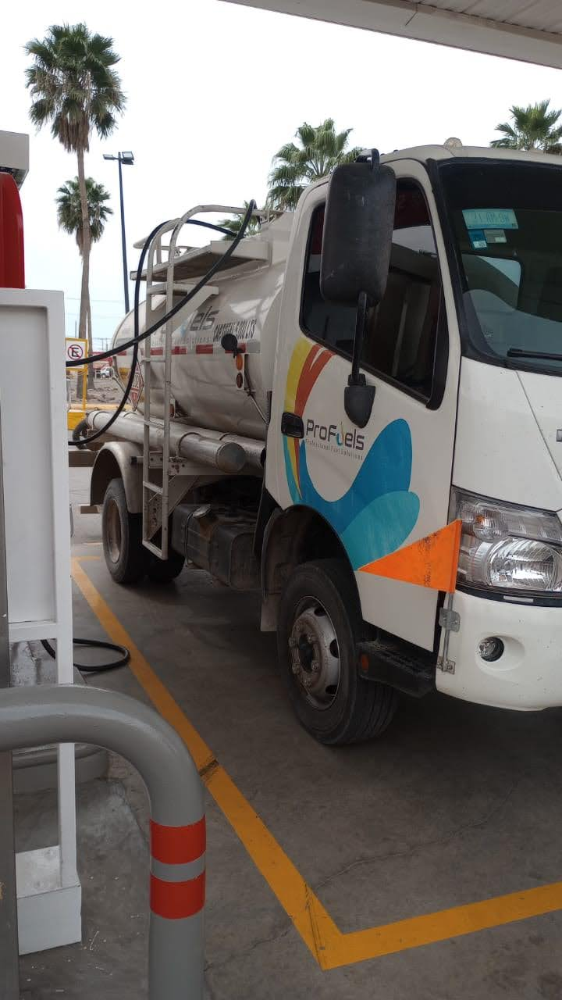
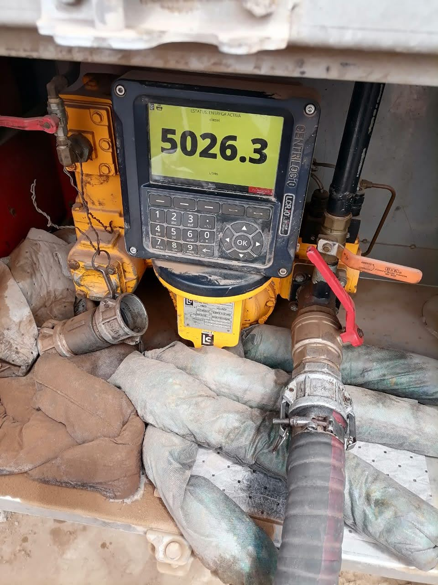
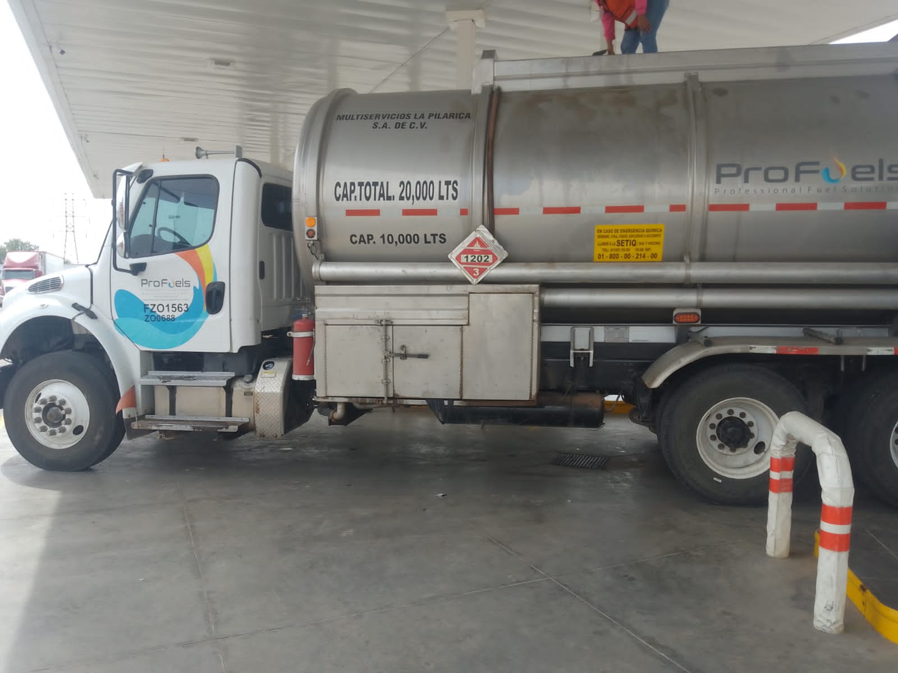
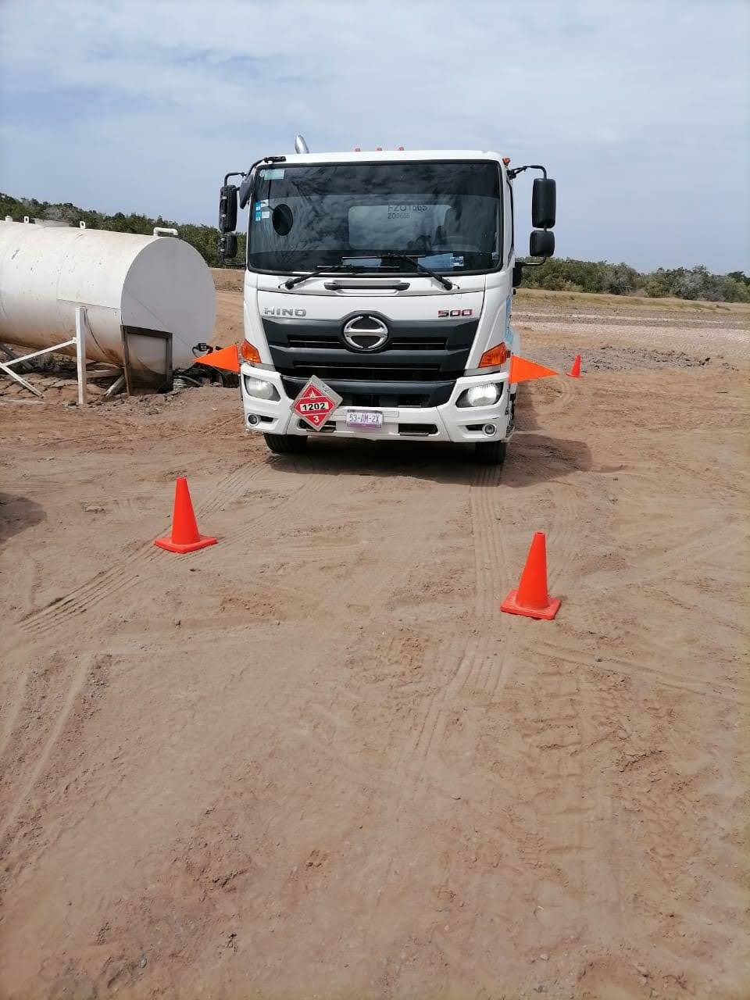

SERVICIO DE CALIDAD EN ATENCIÓN A CLIENTES DE MAYOREO
Nuestra flotilla de pipas esta disponible para abastecer su tanque de autoconsumo. Si no cuenta con uno, se lo proporcionamos.
Contamos con permiso de entrada para cargar producto directamente en planta pemex, por lo que nuestro producto es de la más alta calidad
Si eres propietario de gasolinera y te dedicas a la venta minorista de combustible, también tenemos opciones para ti.
Equipos cargados directamente en estación de servicio

Entregas con cuentalitros para cerciorarse de que se le entrega la cantidad correcta

Contamos con equipos de gran capacidad para clientes que requieren volumenes grandes de producto

Nuestro servicio se extiende hasta 200 km a la redonda. LLegando hasta las granjas acuicolas y pueblos alejados de la ciudad

INICIO